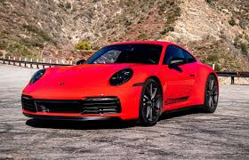

sports
car
Sports car
This article is about roadgoing cars. For racing cars, see Sports car racing. For the album by Judie Tzuke, see Sports Car (album). For the song by Tate McRae, see Sports Car (song).
--Definition--
|  |
| 1996 Porsche 911 GT2, a model homologated for sports car racing |
|
| Hello guys it's my new channel please subscribe my channel🙏🙏 and support me channel |
Definitions of sports cars often relate to how the car design is optimised for dynamic performance,[3][4] without any specific minimum requirements; both a Triumph Spitfire and Ferrari 488 Pista can be considered sports cars, despite vastly different levels of performance. Broader definitions of sports cars include cars "in which performance takes precedence over carrying capacity",[5] or that emphasise the "thrill of driving"[6] or are marketed "using the excitement of speed and the glamour of the (race)track"[7] However, other people have more specific definitions, such as "must be a two-seater or a 2+2 seater"[8] or a car with two seats only.[9][10]